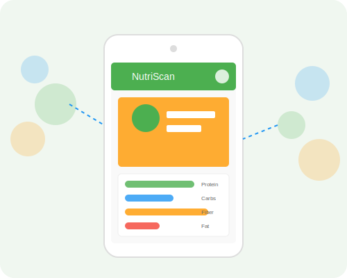

EcoScore is an innovative rating system designed to help consumers understand the environmental impact of food products. In this comprehensive guide, we'll explore what EcoScore is, how it's calculated, and how you can use this knowledge to make more sustainable food choices.
What is EcoScore?
EcoScore is a labeling system that rates food products on a scale from A to E based on their environmental impact, with A being the most environmentally friendly and E having the highest environmental impact. This system was developed in France and has been gaining traction across Europe as a way to promote sustainable consumption.
The EcoScore takes into account various environmental factors throughout a product's life cycle, including:
- Carbon footprint (greenhouse gas emissions)
- Water usage
- Land use and biodiversity impact
- Resource depletion
- Packaging and waste
- Transportation distance
- Production methods (organic, conventional, etc.)
EcoScore Categories
Products are classified into five categories based on their environmental impact:
A (Very Low Impact)
Products with minimal environmental impact, often locally produced, organic, and with minimal processing and packaging.
Examples: Local seasonal vegetables, bulk legumes, local apples
B (Low Impact)
Products with low environmental impact, typically with sustainable production methods.
Examples: Organic milk, sustainably caught local fish, plant-based milk alternatives
C (Moderate Impact)
Products with moderate environmental impact.
Examples: Conventional fruits and vegetables, eggs from free-range chickens, some dairy products
D (High Impact)
Products with high environmental impact.
Examples: Conventional meat products, processed foods with multiple ingredients, imported out-of-season produce
E (Very High Impact)
Products with very high environmental impact.
Examples: Beef from deforested areas, highly processed foods with palm oil, exotic fruits transported by air
Why EcoScore Matters
Understanding the environmental impact of food products is important for several reasons:
Climate Change Mitigation
Food production accounts for approximately 26% of global greenhouse gas emissions. By choosing products with better EcoScores, consumers can help reduce their carbon footprint and contribute to climate change mitigation efforts.
Biodiversity Protection
Certain food production methods can lead to habitat destruction, soil degradation, and water pollution. EcoScore helps identify products that have less impact on biodiversity and natural ecosystems.
Resource Conservation
Food production requires significant resources, including water, land, and energy. Products with better EcoScores typically use these resources more efficiently.
Informed Consumer Choices
EcoScore empowers consumers to make more environmentally conscious food choices based on transparent and standardized information.
How is EcoScore Calculated?
The EcoScore calculation is complex and takes into account multiple environmental indicators. However, a simplified version of the formula can be represented as:
Where:
- Environmental_Impact_Points are calculated based on Life Cycle Assessment (LCA) data, considering factors like carbon footprint, water usage, and land use
- Bonus_Points are awarded for sustainable practices (organic certification, local production, etc.)
- Penalty_Points are deducted for problematic aspects (endangered species, deforestation, excessive packaging, etc.)
The final score is then converted to a letter grade:
- A: 80-100 points
- B: 60-79 points
- C: 40-59 points
- D: 20-39 points
- E: 0-19 points
This formula ensures that the EcoScore takes into account both the environmental impact of the product itself and additional factors that may increase or decrease its sustainability.
Practical Tips for Making Eco-Friendly Food Choices
Here are some practical strategies to reduce the environmental impact of your diet:
- Choose local and seasonal products: This reduces transportation emissions and supports local agriculture.
- Reduce meat consumption: Animal products, especially red meat, generally have higher environmental impacts than plant-based alternatives.
- Minimize food waste: Plan meals, store food properly, and use leftovers creatively to reduce waste.
- Choose products with minimal packaging: Opt for bulk items or products with recyclable or biodegradable packaging.
- Look for sustainability certifications: Labels like Organic, Rainforest Alliance, and MSC (Marine Stewardship Council) can help identify more sustainable options.
- Grow your own food: Even a small garden or a few potted herbs can reduce your food's environmental footprint.
- Support regenerative agriculture: Look for products from farms that practice regenerative methods that improve soil health and sequester carbon.
- Choose whole foods: Less processed foods typically require less energy to produce and often have less packaging.
Conclusion
EcoScore is a valuable tool for understanding the environmental impact of food products. By incorporating more products with better EcoScores into your diet, you can help reduce your environmental footprint and contribute to a more sustainable food system.
Remember that making sustainable food choices is just one aspect of an environmentally conscious lifestyle. Every small change matters, and by being mindful of the environmental impact of our food choices, we can collectively make a significant difference.